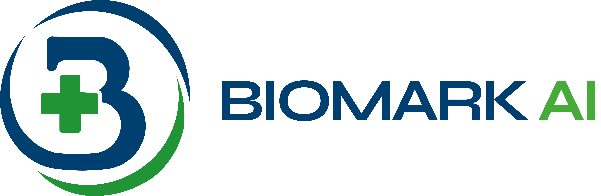

BIOMARK reúne tus antecedentes, jornadas de salud y tu progreso en un solo panel, sincronizado al instante.
Aprende sobre el uso responsable de medicamentos, localiza los centros de salud más cercanos y mantente al tanto de las próximas jornadas de salud en tu comunidad.
Somos una guía para aconsejarte y ayudarte a ser más ordenado con tu salud, pero la visita a tu médico siempre será lo más importante.
Empieza en tu laptop y continúa en tu teléfono: tus datos viajan contigo automáticamente.
Tus chats y progresos se cifran de extremo a extremo. Nadie más los ve, ni siquiera nosotros.
BIOMARK te notifica cuando hay nuevas jornadas y alertas epidemiológicas, antes de que lo notes tú.
Un solo instalador para laptop y una app ligera para tu móvil. Inicia sesión una vez y olvídate de todo lo demás.
Descargar BIOMARK AISer la guía médica preventiva de primera elección para las familias nicaragüenses.
BIOMARK AI no reemplaza al médico, llena el vacío que existe entre una consulta y la siguiente, en el momento exacto en que una familia más lo necesita.
Guiar a las familias nicaragüenses con orientación médica confiable, accesible y continua.